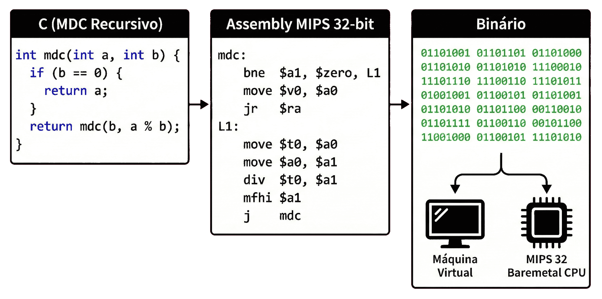
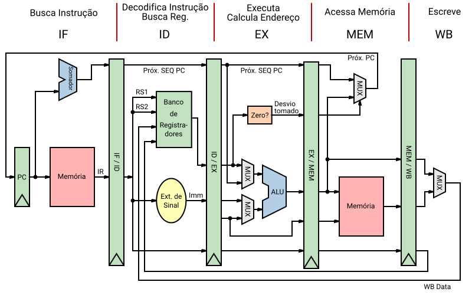
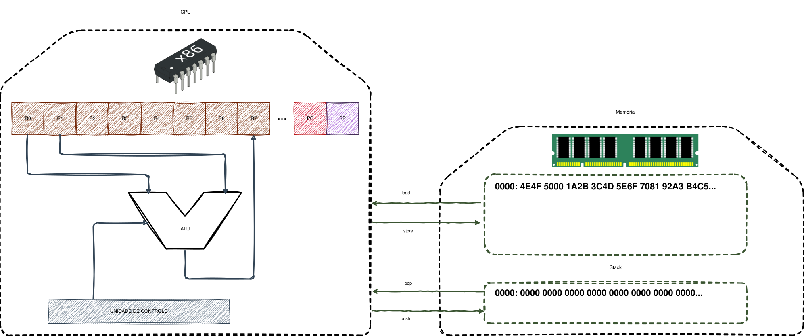
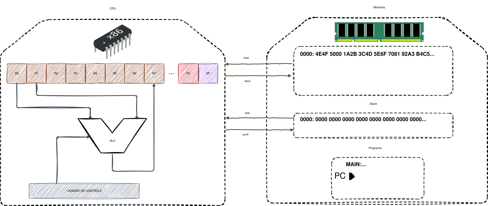

Professor: Gabriel Soares Baptista


if, loop). Um novo endereço é carregado no PC.PUSH e POP.
Para evitar a "multiplicação de esforços" na criação de compiladores para múltiplas linguagens e arquiteturas de hardware, os compiladores modernos fragmentam o processo utilizando uma Linguagem Intermediária (IR). Qual é a principal vantagem matemática e arquitetural dessa abordagem?
Qual é a função do registrador Program Counter, o PC, e por que em várias arquiteturas de 32 bits, como o MIPS, ele é incrementado em 4 bytes a cada instrução sequencial?
Em qual situação o registrador PC não segue o seu incremento automático sequencial e como isso se relaciona com a execução de desvios no código?
Explique a principal diferença de gerenciamento de dados entre uma arquitetura baseada em registradores, como o MIPS, e a arquitetura baseada em pilha que utilizaremos na nossa máquina virtual.
while, 42).[0-9]+).<tipo, valor> (ex: <NUM, 42>, <IDENT, "x">).| Token | Padrão (Informal) | Exemplos de Lexemas |
|---|---|---|
if |
caracteres i, f |
if |
number |
qualquer constante numérica | 3, 0, 3.14 |
id |
letra seguida por letras/dígitos | pi, score |
Abordagem Orientada à Demanda: O Parser (Sintático) solicita o próximo token ao Scanner (Léxico).
Eficiência: Se houver um erro na linha 1, o compilador para imediatamente sem processar o resto do arquivo de 1 milhão de linhas.
Pares de Buffers: Divide a memória em duas metades. Carrega a segunda sem apagar a primeira se o lexema cruzar a borda.
Problema da Fronteira: Um lexema (ex: while) pode ser cortado ao meio entre duas leituras de disco.
Sentinelas: Caracteres especiais no fim do buffer para evitar checar o fim do arquivo a cada byte lido.

Sobre as definições e o funcionamento do analisador léxico (Scanner), classifique: O lexema é a sequência exata e literal de caracteres encontrada no código-fonte, enquanto o token é a estrutura de dados que categoriza esse lexema. (V/F)
Explique como a abordagem orientada à demanda economiza recursos computacionais no caso de um erro de sintaxe encontrado logo no início de um arquivo de código extenso.
O que é o "Problema da Fronteira do Buffer" e como ele é resolvido na etapa de análise léxica utilizando a técnica de Pares de Buffers?
A Tabela de Símbolos permite duplicatas de identificadores para economizar memória? Como o Scanner lida com identificadores repetidos (ex: variável a usada três vezes)?
|): Escolha (a | b).ab).*): Zero ou mais ocorrências.+): Uma ou mais ocorrências (aa*).?): Zero ou uma ocorrência.[]): Conjunto ([a-zA-Z]).[^]): Exceto ([^"]).{n}): Exatamente n ocorrências (a{2}).Identificador: Deve começar com letra, seguido de letras ou dígitos.
[a-zA-Z][a-zA-Z0-9]*
Número Inteiro: Sequência de um ou mais dígitos.
[0-9]+
Número Decimal (Float):
[0-9]+\.[0-9]+
Hexadecimal (C): Começa com 0x seguido de 0-9 ou a-f.
0x[0-9a-fA-F]+
AST (Abstract Syntax Tree): Representação hierárquica do código.
Constant Folding (Dobra de Constantes): O compilador calcula expressões constantes em tempo de compilação.
Antes: x = 2 * 3 + a
Depois: x = 6 + a
Princípio DRY (Don't Repeat Yourself): Evita definir tokens no enum e no array de strings separadamente.
Sincronização: Uma única lista TOKEN_LIST gera ambos automaticamente.
#define TOKEN_LIST \
X(TOK_PLUS) X(TOK_MINUS) X(TOK_IDENTIFIER)
typedef enum {
#define X(name) name,
TOKEN_LIST
#undef X
} TokenType;
static const char* const TokenNames[] = {
#define X(name) #name,
TOKEN_LIST
#undef X
};
Estratégia Two-Pointers:
start: Início do lexema atual.current: Cursor de leitura avançando.Lookahead (peek e peek_next): Espia o caractere atual e o próximo sem consumi-los, respectivamente. Essencial para diferenciar / de // ou = de ==.
Função match: Verifica se o próximo caractere é o esperado. Se sim, consome e retorna true.
Considere a expressão int x = 2 * 3 + a;. Descreva como o processo de otimização via Constant Folding alteraria a AST dessa expressão e qual o benefício para o programa final.
Escreva uma expressão regular para reconhecer identificadores que devem obrigatoriamente começar com um sublinhado _, seguido por pelo menos uma letra maiúscula, podendo terminar com qualquer combinação de letras ou dígitos.
Explique o motivo crucial de a instrução lexer->start = lexer->current; ocorrer após a chamada de skip_whitespace(lexer);. O que aconteceria se invertêssemos essas linhas?
Explique detalhadamente como a função match resolve a ambiguidade léxica entre os operadores = (atribuição) e == (igualdade) ao encontrar os caracteres == no código.
Até semana que vem (avaliação)!